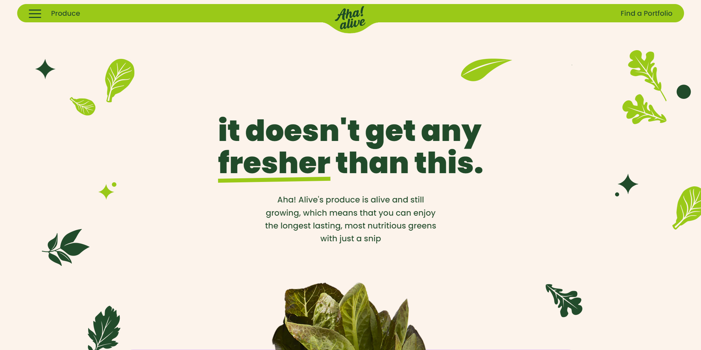

AHA! ALIVE
- 
AHA! ALIVE
목표
다양한 애니메이션과 효과가 있는 사이트를 여러가지 스크립트와 플러그인들을 이용하여 구현함
Plugin
-
GSAP(ScrollTrigger)
Scroll 플러그인
-
Scrooth
마우스휠 플러그인
-
Swiper
슬라이드 플러그인
Project
Publishing
- 기존 사이트의 여러 효과들을 CSS/JS를 이용하여 표현
- swiper의 레이아웃을 수정하여 배치
- scrooth를 이용하여 마우스휠 움직임 부드럽게 하기
- GSAP의 ScrollTrigger를 이용하여 사진이 움직이는 효과
- 특정 구간에 스크롤될때마다 애니메이션 효과
Problem & Solution
Swiper 레이아웃
Problem
기존의 Swiper 레이아웃의 HTML을 사용하여 Swiper 바깥쪽에 버튼을 배치하려고 했습니다. 그러나, Swiper의 기본 속성인 overflow:hidden 값으로 인해 버튼이 레이아웃 바깥으로 배치할수 없었습니다.
Solution
Swiper 레이아웃 바깥쪽에 Swiper 전체를 감싸는 div 영역을 추가하고 기존 Swiper의 Position은 Static으로 수정했습니다. 그리고, 새로 추가한 div영역을 Position: Relative로 지정하여 Swiper 바깥쪽에 버튼을 Swiper 외부에 배치하였습니다.
마우스휠 관련 플러그인
Problem
GSAP의 SmoothScroll 이라는 기능을 이용하여 마우스휠의 움직임을 부드럽게 표현하려고 했습니다. 그러나, 이 플러그인은 HTML Body영역 전체를 translate를 이용하고 움직임을 표현하고 overflow:hidden이 적용되어 position: sticky를 지정한 영역의 sticky 기능이 작동하지 않는 문제가 있었습니다.
Solution
SmoothScroll과 비슷한효과를 줄수있는 여러가지 플러그인들을 적용하기 위해서 easeScroll, jQuery UI의 animation 효과등을 적용해봤습니다. 그중에 원하는 느낌과 가장 비슷한효과를 표현해주는 Scrooth 라는 플러그인을 사용하여 마우스휠의 움직임을 부드럽게 표현하였고, position:sticky 가 지정된 영역도 정상적으로 작동했습니다.
스크립트 작동 좌표
Problem
특정 영역에 스크롤이 되면 스크립트가 작동되도록 표현하려고 if문을 사용하려 했는데, scrollY의 값을 어떤식으로 잡아야 할지 고민했습니다.
Solution
처음에는 해당 영역의 scrollY값을 직접 구해본뒤, if문의 조건에 그 숫자를 직접 입력했는데 영역이 변경될수있고 작업효율도 좋지않다고 생각하여 영역의 크기나 좌표에대해 검색을 하여 알아 보았습니다. 그렇게 검색해서 알아본뒤 offsetTop은 해당영역에서 페이지의 맨위까지의 크기를 나타내주기 때문에 작동되기 원하는 영역의 offsetTop에서 화면의 높이(screen.height)만큼을 빼준 결과를 scrollY의 범위로 지정하는식으로 스크립트를 원하는 영역에서 작동시켰습니다.